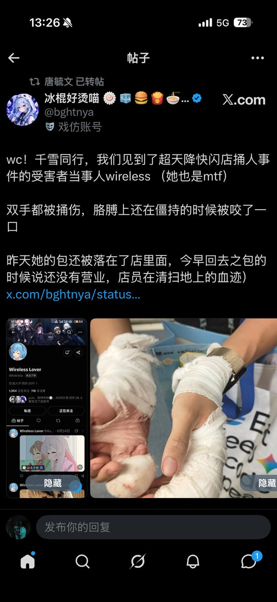
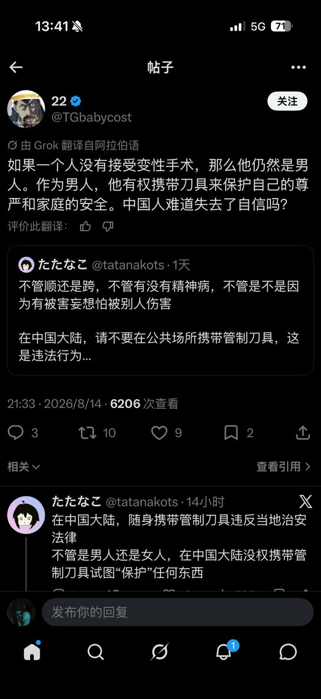

璋🏳️⚧️
@10Lystra
@YyyyyIsntPog 话是这么说但是三角枫现在在哪发财呢


^^
@YyyyyIsntPog
看了那个wireless快闪店被捅事件
即使p3说（暂且认为没有美化）三角枫精神状态不好，本人表意识无攻击意愿纯属精神病促使，但在精神病性症状减退之后三角枫没有给受害者一点赔偿。
抛开跨圈餐券什么的正常遇到无控制力的精神病人伤人首先要做的就是赔偿+强制送入医院治疗，而现在是两者皆无 https://t.co/Yi5EiSOEly